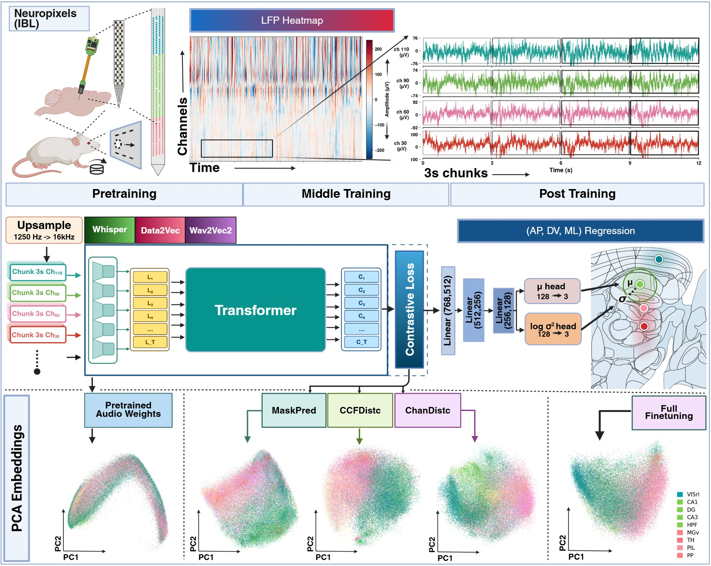
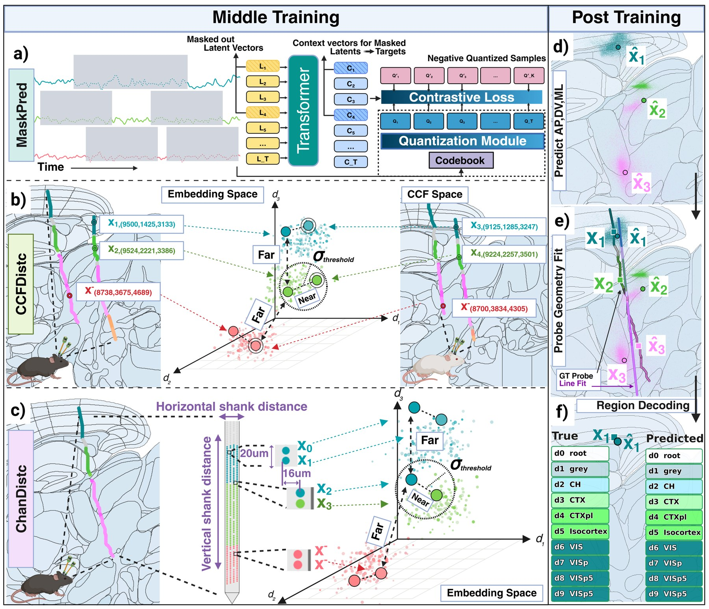
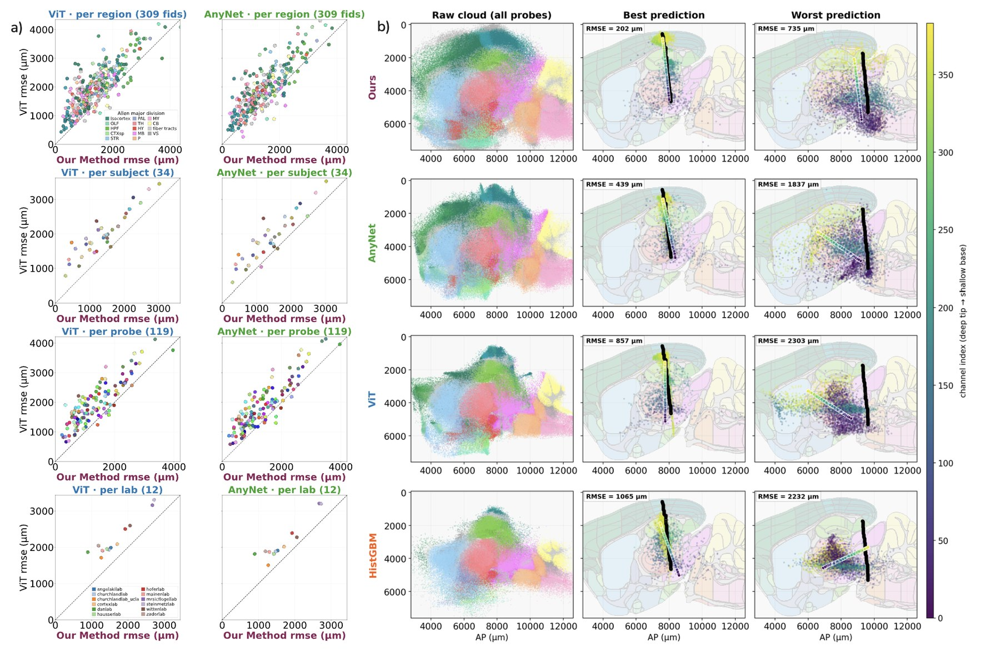
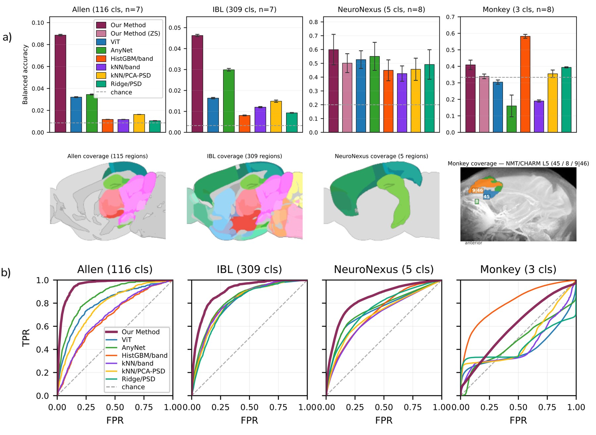
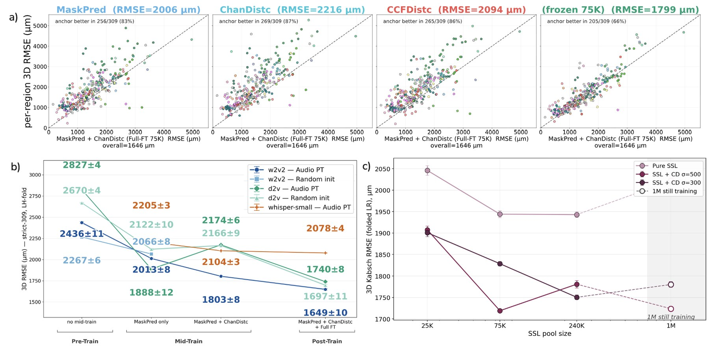

Geometry-Aware Self-Supervised Electrophysiology Representation Learning. We test the hypothesis that raw local field potentials carry enough anatomical information to place their own recording site in 3D atlas coordinates — no histology, no imaging.
Author list withheld during double-blind review
Electrode localization is a prerequisite for almost every analysis in systems neuroscience — and today it still depends on post-hoc histology.
Precise localization of recording electrodes is fundamental to systems neuroscience; yet current methods depend on labor-intensive post-hoc histology, which is incompatible with real-time feedback or chronic implants. We test the hypothesis that the electrical signals being recorded themselves carry sufficient anatomical information to localize their recording site in 3D atlas coordinates, without the need for histology.
To probe this, we introduce a self-supervised framework that learns geometry-aware representations of single-channel local field potentials (LFP), leveraging probe channel geometry as a free self-supervisory signal. We compare speech-based SSL objectives (e.g. masked prediction) against geometry-aware objectives that constrain the embedding space to mirror the physical channel layout along the probe. These representations outperform masked-prediction baselines, and the gains compound at larger data scales.
We test downstream analysis with 3D coordinate regression and brain-region classification, benchmarking three SSL backbones (Wav2Vec 2.0, Whisper, Data2Vec) against supervised baselines (AnyNet, ViT, and classical spectral classifiers) across datasets, laboratories, species, and probe technologies. Our method achieves state-of-the-art results in brain-region classification and 3D coordinate regression from raw single-channel LFP, outperforming all baselines — affirming the hypothesis.
Geometry as a free supervisory signal, a systematic backbone comparison across two orders of magnitude of data, and brain-wide localization at millimetric precision.
Neuropixels electrodes sit on a known lattice — 20 µm vertical, 16 µm horizontal pitch. ChanDistc pulls together channels that are physically close on the shank and pushes apart distant ones, so the embedding space is forced to mirror physical space. It needs no atlas registration and no histology — the geometry is free at recording time.
1,799 µm frozen, MaskPred + ChanDistc @75KWav2Vec 2.0, Whisper and Data2Vec evaluated as LFP encoders across pretraining pools spanning two orders of magnitude (5K → 1M chunks), against supervised deep baselines (AnyNet, ViT) and classical spectral decoders. Geometry-aware losses keep improving with scale while pure masked prediction plateaus.
1,649 ± 10 µm Wav2Vec 2.0, full fine-tuningSingle-channel raw LFP supports both 309-class region classification inside the Allen hierarchy and continuous CCF coordinate regression — and it generalizes across laboratories, probe technologies (NeuroNexus) and species (macaque).
202 µm best-case probe, 3D RMSEA 3-second chunk from a single channel goes in; an atlas coordinate, an uncertainty and a region label come out.
Destriping (2 Hz high-pass, bad-channel interpolation, common-mode subtraction), then 3-second windows — each channel treated as an independent sample.
Each 3,750-sample segment is sinc-upsampled 1,250 Hz → 16 kHz so the audio CNN
front-end operates in the band its filters were pretrained for.
Masked prediction (MaskPred), atlas-distance contrastive (CCFDistc) or
on-shank distance contrastive (ChanDistc) — or MaskPred and ChanDistc jointly.
A heteroscedastic Gaussian head emits µ (AP/DV/ML) and log σ²; per-probe
Kabsch fitting then snaps the channels back onto a straight shank.


Watch the same 119 held-out IBL probes resolve under three methods — the raw per-chunk cloud, averaged per channel, then snapped to the shank by Kabsch. Ours ends tightest.



119 IBL test probes, three models, one dropdown. Switch between the 3D trajectories and the per-channel predicted-vs-actual scatter; pick a probe in the 3D view and the region map follows it. Everything below is live — rotate, zoom, hover.
The manuscript is under double-blind review; this entry will be updated when the camera-ready lands.
@inproceedings{brainstorm2026,
title = {Geometry-Aware Self-Supervised Electrophysiology
Representation Learning},
author = {Anonymous Authors},
booktitle = {Submitted to the 40th Conference on Neural Information
Processing Systems (NeurIPS 2026)},
year = {2026},
note = {Under review}
}